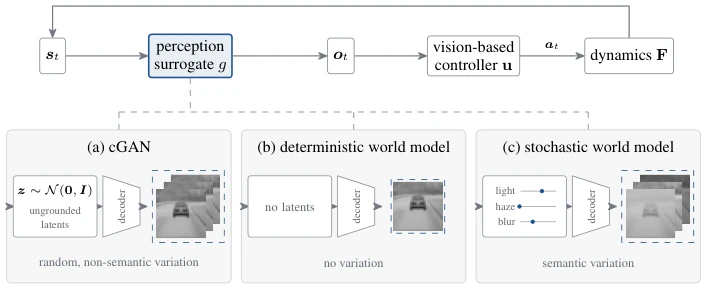
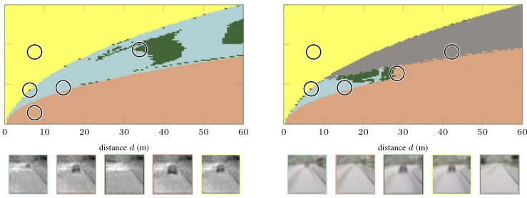

Stochastic World Models for Verifying Vision-Based Neural Feedback Systems
I. Samuel Akinwande, Mykel J. Kochenderfer, Clark Barrett abspdf
论文点评Review
这篇论文把“世界模型”从游戏 AI 拉到了形式化验证的严肃战场，思路很清奇：不让噪声乱飘，而是绑定到物理量（如太阳高度角）。结果确实漂亮，灰度刹车基准全解，RGB 也解了八成，参数还比 GAN 少 130 倍。但吐槽一下：符号分析几乎没干活，只解了 3 个格子；RGB 结果用的是卷积头，没敢碰原版的注意力头；而且所有保证都基于仿真，真机迁移还是玄学。不过，把感知模型变成“带物理意义的生成器”这个思路，确实给具身智能的安全验证开了条新路，至少比那些黑盒 GAN 靠谱多了。尽管目前还停留在仿真阶段，但物理量化的尝试或许能缓解验证器与生成模型之间的验证难题。
—
研究动机Motivation
现代自主系统依赖视觉反馈闭环，这些系统在安全关键领域如空中导航、人形机器人和自动驾驶中日益部署。但验证这些系统面临核心矛盾：感知模型既要能逼真还原传感器看到的图像变化，又要足够紧凑以便验证器推理。现有工作多用条件 GAN 替代相机（Katz et al., 2022; Cai et al., 2025），但它们参数量大、难以验证，且往往无法覆盖真实场景的复杂变化，导致验证器留下大量未决状态空间（Cai et al., 2025 在灰度基准上遗留 38% 未解）。确定性世界模型（Geng et al., 2025）虽然易验证，但缺乏对环境变化（如光照、天气）的建模能力。如何在保持表达力的同时让感知模型变得“可证”，是具身智能安全部署的关键瓶颈。本文旨在通过设计物理可解释的随机世界模型，解决这一张力，将视觉反馈系统纳入状态系统的形式化框架中。
—
方法Method
整体流程将视觉反馈系统形式化为状态系统，其中传感器被替换为生成模型。核心创新在于训练一个随机世界模型作为感知代理（Perception Surrogate）。该模型采用反卷积解码器架构，状态输入决定场景几何，而物理量化的潜在变量（如太阳高度角）通过 FiLM 层调制图像外观，确保变化范围可被验证器界定为“盒子”。验证过程采用组合策略：先对初始状态空间均匀分格，对每个格子依次执行 falsification（快速找反例）、forward analysis（前向可达性）、adaptive refinement（自适应细化）、symbolic analysis（符号分析）和 backward analysis（后向可达性）。其中，符号分析用于保留多步相关性，后向分析用于收紧不可达集。这种混合策略旨在平衡计算成本与验证完备性，确保在有限资源下尽可能覆盖状态空间。此外，模型训练仅依赖像素级损失，无需针对控制器微调，保证了泛化性。验证器通过 McCormick 松弛处理 FiLM 乘积，确保所有操作均可被标准验证器界定。
—

Figure 1: Perception surrogates for vision-based neural feedback systems. The surrogate g supplies the observation ot the controller acts upon, and so determines the variation the closed loop can see. (a) A cGAN draws its variation from a Gaussian latent with no direct physical meaning. (b) A deterministic world model has no latent and no variation. (c) Our stochastic world model draws its variation from a few physically grounded latents, whose ranges form a box that verifiers can bound.
Figure 4: Held-out frames and each surrogate’s rendering at the same state. The GAN row shows the released generator of each benchmark at zero latent, and the world model row shows our model at the center of its latent box. The plots below show the state the perception network estimates from each source’s frames (crosstrack position for taxiing, distance for AEBS) against the true state, as a median and a 25–75% band over the held-out set.

Figure 5: Each cell of the AEBS benchmark, colored by the analysis that decided it, on the released grayscale cGAN and on our RGB world model. Abstraction optimization includes adaptive refine- ment, and backward analysis decides every cell the baseline verifies. Most unresolved cells on the world model have not yet been analyzed. Each circle marks one cell per outcome, rendered below by that surrogate and framed in the outcome’s color.